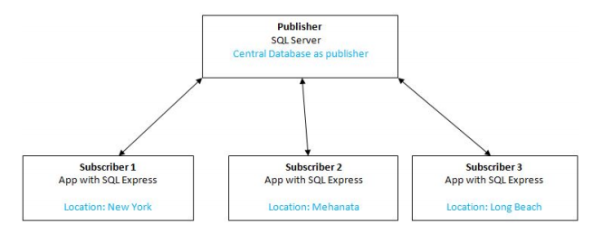
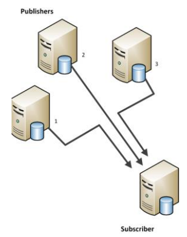
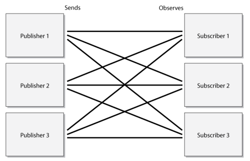

Overview
- It defines the physical implementation of how the data will be distributed.
- Any of the replication types can use any of the replication models.
- Another consideration when choosing an appropriate replication model is whether to have the publisher and the distributor on the same instance.
- Geographical distribution and network availability may influence decision to use a local distributor versus a remote one.
Single Publisher/Multiple Subscribers

In cases in which the data should originate from one location only, this can be used to provide access to data for remote locations.
Multiple Publishers/Single Subscriber

This model can be used when multiple servers will track and update data, but that data will need to be consolidated on a single server.
Multiple Publishers/Multiple Subscribers

- This model works well for environments where data must be shared among peers.
- This can be useful in applications in which the local database stores information about local and remote operations.
- Each publisher can provide updates made locally to all other replication partners that participate in this model and receive the updates, in turn.